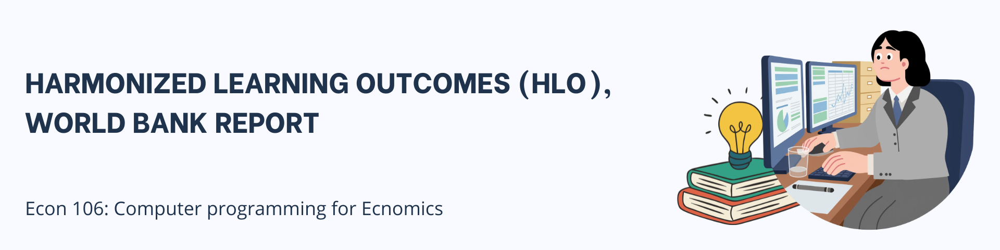
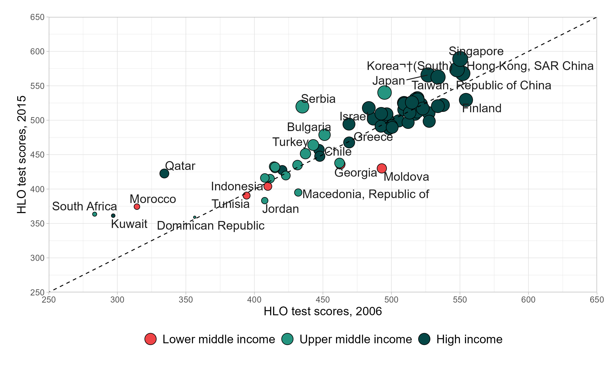

library(tidyverse)
library(janitor)
library(readxl)
library(ggrepel)
Course Title: Econ 106 Computer programming for economcis
Instructor: Christopher Llones
Exercise:Replicating a World Bank figure using ggplot2
Due Date: 23 April 2026
Submission link: Google form submission
Objective
By the end of this exercise, students will be able to:
- Import and clean raw Excel data using readxl and janitor.
- Transform data from long to wide format with dplyr and tidyr.
- Create a bubble scatter plot in ggplot2 with customized aesthetics.
- Replicate a figure from the World Bank’s Human Capital Report.
- Interpret the visualization in terms of economic development and human capital outcomes.
Data management
Download the dataset: hlo_database.xlsx (from the World Bank Data Catalog). You may read the full report here.
Install (if needed) and load the following packages
Use
read_excel()to load the dataset from the World Bank’s Human Capital Report database. Select the correct sheet (in this case, sheet 3).Apply clean_names() from the janitor package to standardize variable names (lowercase, snake_case).
Select and keep only the columns:
country,year,hlo_m, andincomegroup. These are the needed variables for analysis.Filter the dataset to the years 2006 and 2015, since these are the comparison points for the visualization.
Group by
incomegroup,country, andyear. Compute the average ofhlo_musingsummarise(mean_hlo = mean(hlo_m)). This ensures each country-year has a single representative value.Reshape the dataset to wide format. Use
pivot_wider()withnames_from = yearandvalues_from = mean_hlo. This creates two columns: one for 2006 values and one for 2015 values.Remove incomplete cases by applying
na.omit()to drop countries missing data for either year.Rename the year columns to
hlo_2006andhlo_2015for easier reference in plotting.The final dataset should be similar with the dataset below.
Creating Bubble Plot

Prepare the income group variable
- Convert incomegroup into a factor and set the order of levels (High income, Upper middle income, Lower middle income).
- This ensures the legend displays groups in a meaningful order.
Set up the plot structure. Use
ggplot()with the datasethlo_dta.- Map aesthetics:
x=hlo_2006(scores in 2006)y=hlo_2015(scores in 2015)size=hlo_2015(bubble size reflects 2015 scores)fill=incomegroup(bubble fill color shows income group).
- Map aesthetics:
Add bubbles with outlines. Use
geom_point(shape = 21, color = "black")to draw filled circles with a black outline.Add a reference line. Use
geom_abline(slope = 1, intercept = 0, linetype = "dashed"). This diagonal line shows where 2006 and 2015 scores would be equal. Countries above the line improved; those below declined.Label countries. Use
geom_text_repel(aes(label = country))from the ggrepel package. This places country names near bubbles without overlapping.Customize axes. Use
scale_x_continuous()andscale_y_continuous()to set limits (250–650), tick marks every 50, and axis titles. This ensures a consistent scale for comparison.Customize colors and sizes. Use
scale_fill_manual()to assign custom colors for income groups. Usescale_size(range = c(1, 8), guide = "none")to control bubble size range and hide the size legend.Adjust the legend. Use
guides(fill = guide_legend(override.aes = list(size = 6), reverse = TRUE)). This enlarges legend bubbles and reverses the order for clarity.Add labels and themes. Use
labs(fill = NULL)to remove the legend title. Applytheme_light()for a clean background. Adjust margins, axis text, and legend position withtheme()for readability.